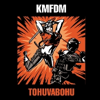

Tohuvabohu (2007)
RockAlternativeUltra Heavy Beat
| Artist | KMFDM |
|---|---|
| Year | 2007 |
| Genre | Rock, Alternative, Ultra Heavy Beat |
| Tracks | 12 |
Track List
| 1 | Superpower | 4:16 |
| 3 | Tohuvabohu | 5:19 |
| 4 | I Am What I Am | 4:51 |
| 5 | Saft Und Kraft | 4:35 |
| 6 | Headcase | 3:56 |
| 7 | Los Ninos Del Parque | 3:57 |
| 8 | Not In My Name | 4:49 |
| 9 | Spit or Swallow | 4:11 |
| 10 | Fait Accompli | 5:04 |
| 11 | Bumaye | 4:46 |
| 12 | 2007 | 4:44 |
| 12 | Tohuvabohu (Angelspit Remix) [*] | 5:17 |